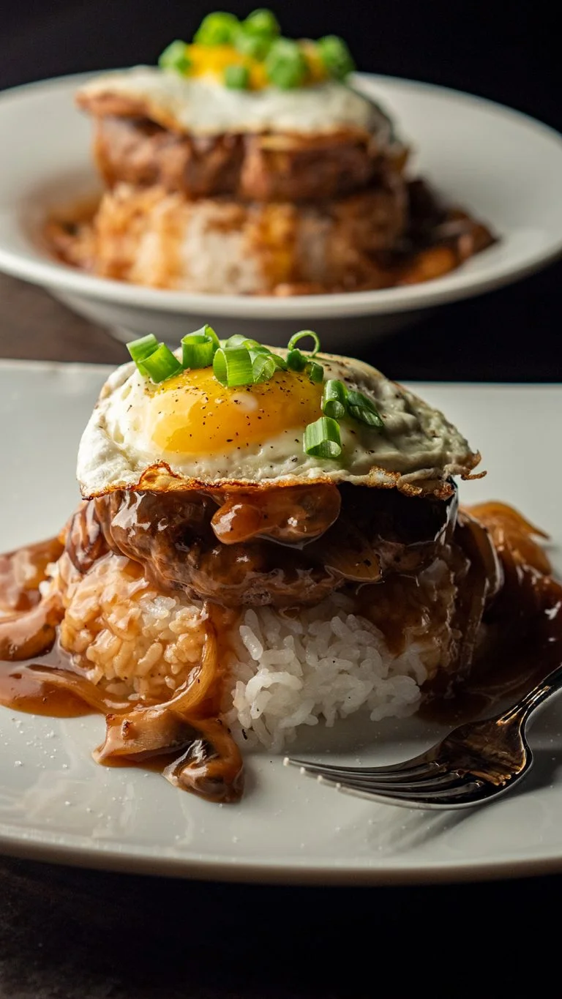

Loco Moco

A contemporary Hawaiian cuisine
The Loco Moco is a contemporary Hawaiian cuisine. There are many variations of the dish, but the traditional version consists of white rice with a hamburger patty and a fried egg on top. Then it is coated in a brown beef gravy. Sometimes with mushrooms in the gravy.
Ingredients
- Short grain white rice
- Ground beef
- Eggs
- Salt
- Pepper
- Onion Powder
- Beef stock or brown gravy mix
- Brown or white mushrooms(Optional)
- Cornstarch Slurry(To help thicken the gravy)
- Vegetable Oil
Steps
- Make your rice using whatever method you prefer. Whether that's with a rice cooker or with a pot on the stove.
- Prepare you ground beef by forming balls the size of a tennis ball
- Season your beef balls with a good amount of salt, pepper, and onion powder
- In a hot pan, place 2-4 ground beef balls(depending on the size of your pan) in and smash them down with a spatula and a heavy bottom cup until flat. Season a little more if desired.
- Once cooked through, remove the beef patties and add your sliced mushrooms(if using) and cook and toss in the beef drippings until brown.
- Remove the mushrooms and add your beef stock, bring to a boil and then stir in your cornstarch slurry and reduce heat to lo and stir.
- Once thickened, return mushrooms to the pan and stir.
- In another pan, heat vegetable oil on medium heat and add your egg. Fry on both sides until white is cooked and yolk still runny. 15 seconds each side usually or until desired doneness.
- In a bowl put a layer of rice, then place a hamburger patty on top followed by your fried egg. Finally, ladle on you brown gravy.